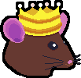
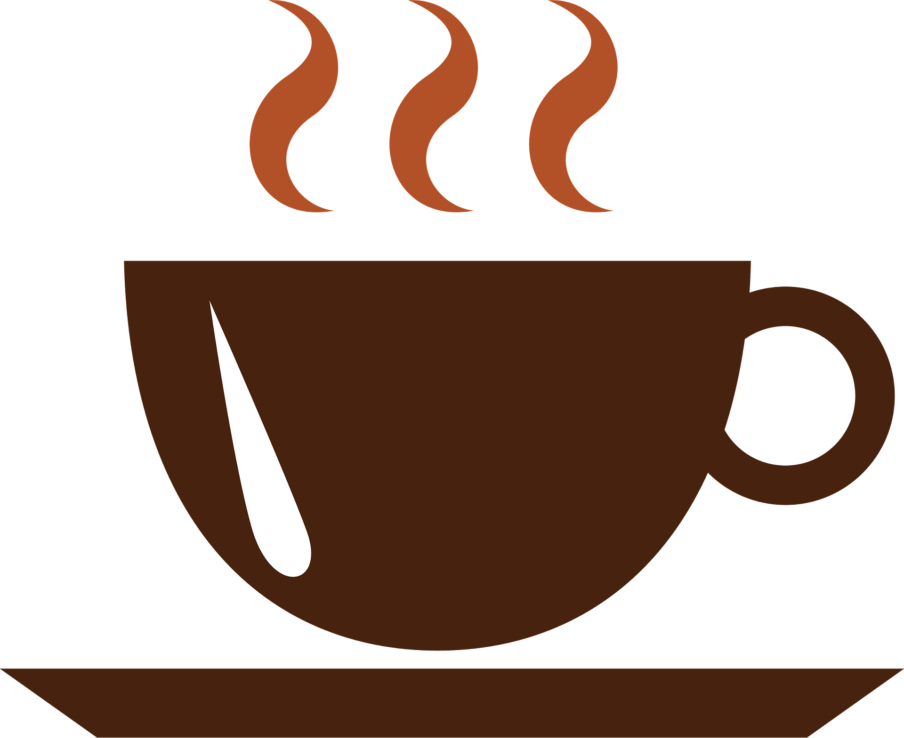

Filthy Feathers


Filthy Feathers es un juego de tower defense en el que el jugador, como el rey de las ratas, deberá detener la invasión de los loros piratas. Tendrás que poner torres (inmóviles) y tropas terrestres (móviles) para detener el avance enemigo, y mejorarlos para mantenerse al acelerado ritmo de la invasión. El juego consistirá de varios niveles, cada uno con mayor dificultad que el anterior, para desterrar definitivamente a los loros y mantener control de tus tierras.
El juego principal se controla únicamente con el ratón. La galería también es completamente navegable con ratón, pero puedes ir pasando por las obras con las flechas del teclado.
Puedes jugar a Filthy Feathers mientras te tomas el café de las mañanas.
